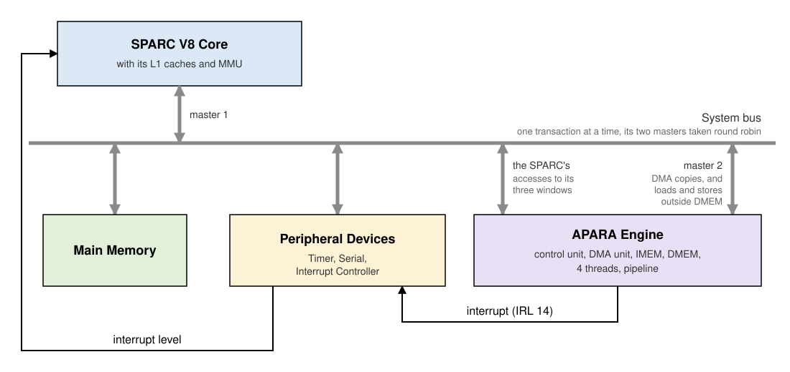
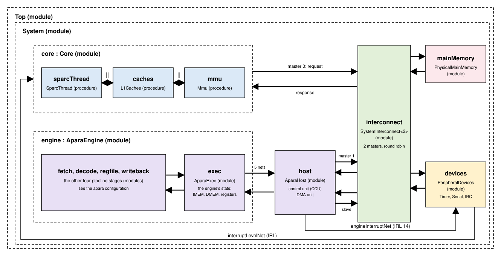

The APARA Engine in a System (sparc_apara)¶
The sparc_apara configuration is a complete system with one SPARC
processor and one APARA engine. It is also called the 1p1e system. The
SPARC core is the one of core_l1cache_mmu_devices, with its L1 caches,
MMU and peripheral devices, and the engine sits beside it as an
accelerator. The SPARC program does the general-purpose work, and hands
regular, vector-heavy work to the engine.
This page describes the hardware of the system. It lists the components, shows how they are connected, and describes the address map, the engine's control unit and DMA unit, and its interrupt. It ends with how the two models implement the system. The software side, which covers how a SPARC program uses the engine and how to write such a program, is described in Programming the System.
The components¶
The system has the following components:
- The SPARC V8 core, with its instruction and data L1 caches and its MMU. It runs the main program, a bare-metal C program.
- Main memory, 256 MB, which holds the SPARC program and its data.
- The peripheral devices, which are a timer, a serial device, and the Interrupt Controller. The engine's interrupt reaches the SPARC through the Interrupt Controller.
- The system bus, which joins all of the above. It has two masters, the SPARC core and the engine, and carries one transaction at a time.
- The APARA engine, with its five-stage pipeline, its four hardware threads, its 16 KB instruction memory (IMEM) and its 64 KB data memory (DMEM). See The engine at a glance for a block diagram of the engine itself.
- The engine's control unit (CCU). Its memory-mapped registers let the SPARC load IMEM, set a thread's registers, and start, reset or query a thread.
- The engine's DMA unit. It has four channels, which copy data between main memory and DMEM while the SPARC and the engine both go on working.
The control unit and the DMA unit form the engine's host side, the
part that faces the system. The engine's pipeline and memories are the
same as in the standalone apara configuration.
How the parts are connected¶
The SPARC core reaches main memory, the devices and the engine through the system bus. The engine is the bus's second master. Its DMA unit, and its own loads and stores outside DMEM, reach main memory through the bus too.

The SPARC and the engine communicate in four ways:
- Commands, from the SPARC. Writes to the control unit's registers load IMEM, set a thread's registers, and start, reset or query a thread (see The control unit). Writes to the DMA unit's registers start copies (see The DMA unit).
- Data in DMEM, which the SPARC reads and writes directly through its window in the system's address space, or has the DMA unit copy.
- Data in main memory, which the engine's own loads and stores, and its DMA unit, reach over the bus as its second master.
- Completion, from the engine. A thread that stops, with
$haltor an exception, leaves a completion word for the SPARC to poll. The control unit can also raise an interrupt, which reaches the SPARC as IRL 14 through the Interrupt Controller. A DMA channel that finishes can do the same.
The engine's threads share its IMEM, DMEM and pipeline. Each thread has its own 32 registers, PC, return-address stack, and ERROR register.
In the timing model, these parts are modules joined by nets (see The models):

Address map¶
The system's physical addresses are as follows:
| Range | What |
|---|---|
0x0000_0000 .. |
Main memory (256 MB), except for the DMEM window below. |
0x0100_0000 .. 0x0100_FFFF |
The engine's DMEM, 64 KB. |
0xFFFE_0000 .. 0xFFFE_007F |
The engine's control unit (CCU) registers. |
0xFFFE_2000 .. 0xFFFE_207F |
The engine's DMA registers. |
0xFFFF_0000 .. 0xFFFF_FFFF |
The peripheral devices. |
These three ranges, DMEM, the CCU registers and the DMA registers, are
the engine's three windows. Only main memory is ever cached, and the
engine's windows never are. A SPARC program should reach the windows
with MMU-bypass accesses (ASI 0x20), as the routines in
Programming the System do. The
DMEM window lies inside main memory's range, so a program's own code
and data must stay clear of it.
The engine's own view¶
Inside the engine, an address in its own DMEM window is local, and
every other address goes off island, out to the system, as in the
hardware. In a system, an engine program therefore addresses its DMEM
by the window's address. Usually the SPARC program passes that address
in a register, for example in $r9:
// $r9 = 0x01000000 (set by the SPARC). DMEM byte 0x100 is $r9 + 256.
|| $st ($i64) [$r9 + 256] $r3 ;
An engine load or store to any other address reaches main memory, or a
device, through the system bus. Such an access takes much longer than
a DMEM access. The standalone apara configuration instead maps every
address into DMEM.
The control unit¶
The control unit has a block of 8 32-bit registers for each of the
engine's four threads, at 0xFFFE_0000 + 32*thread + 4*register.
Commands for a thread go through its block.
| Register | Contents |
|---|---|
| R0 | Control. Bits [31:16] are a sequence number, [15:14] a thread number (for command 9), and [11:8] the command. The flags are [4] run the command interpreter, [3] interrupt enable, [2] completed, [1] started, and [0] start. Bits [7:5], "init done" and "cpu mode" in the hardware, are kept but have no effect in the model. |
| R1 | PC |
| R2 | IMEM index, or register number |
| R3 | IMEM write data, or timer high |
| R4 | IMEM read data, or timer low |
| R5 | Completion. Bit [31] is valid, [26] RAS error, [25] halt, [24] exception, and [23:0] the exception codes. |
| R6 | Register high, or stop PC, or RAS depth |
| R7 | Register low, or next PC, or RAS top |
To give a command, the host writes its arguments into R1 to R7. It then writes R0 with the command and the flags start and run the command interpreter. The unit sets started, carries the command out, writes its results into the registers, and sets completed. The host polls R0 for completed before it reads the results or gives the next command.
| Command | Does |
|---|---|
| 1 read IMEM | R4 := IMEM[R2] |
| 2 write IMEM | IMEM[R2] := R3. IMEM is shared by the threads, so any thread's block will do. |
| 3 reset | Stops the thread. Its PC becomes 0, its RAS and ERROR are cleared, and its registers are kept. |
| 4 run | Starts the thread at R1. |
| 5 read register | R6:R7 := register R2 (high:low) |
| 6 write register | register R2 := R6:R7 |
| 7 completion | Once the thread has stopped, R5 := valid plus its ERROR, and R6 := its PC. Each stop is reported once. Before the stop, R5 := 0. With interrupt enable set, the command instead waits for the stop, and then raises the engine interrupt. |
| 8 step | Runs one bundle at R1, with local data only. R7 := the next PC. |
| 9 RAS state | R6 := depth, and R7 := top, of the RAS of the thread named in R0[15:14]. |
| 10 timer | R3:R4 := the engine's cycle count. |
Writing R0 with interrupt enable clear clears the interrupt.
The DMA unit¶
The DMA unit copies data between main memory and DMEM, while the SPARC
and the engine both go on working. It has four independent channels,
each with 8 registers at 0xFFFE_2000 + 32*channel + 4*register:
| Register | Contents |
|---|---|
| R0 | Control. Bits [31:24] are the operation (1 load, from main memory to DMEM, or 2 store, from DMEM to main memory). Bits [23:20] and [19:16] are the top 4 bits of the 36-bit source and destination addresses, and [15:8] a sequence number. The flags are [4] error, [3] interrupt enable, [2] completed, [1] started, and [0] scheduled. |
| R1, R2 | Source and destination base addresses. |
| R3 | Total bytes (for the record only). |
| R4 | Number of bursts. |
| R5 | Gap, the distance between bursts. |
| R6 | Bytes per burst. Once completed, the stop cycle. |
| R7 | The start cycle. |
The host writes R1 to R6, then writes R0 with the operation and scheduled, which starts the channel. A copy is a number of bursts, so one command can also collect or spread out strided data:
- A load gathers. Burst i comes from source + i·gap, and lands at destination + i·(bytes per burst), so the bursts end up packed together in DMEM.
- A store scatters, the reverse. The data is packed in DMEM, and spread out in main memory.
One contiguous copy is a single burst. The DMEM-side address may be a DMEM byte offset or a window address. When the copy is done, the channel sets completed, and raises the engine interrupt if interrupt enable was set. Writing R0 with interrupt enable clear clears the interrupt. An unknown operation completes at once, with error set.
Interrupts¶
Both units can interrupt the SPARC when something finishes. The control
unit does so when a thread stops (command 7 with interrupt enable),
and the DMA unit when a channel completes. Either one drives the
Interrupt Controller's external input, IRL 14 (EXTERNAL_IRL). The
Interrupt Controller then passes the interrupt to the SPARC core, as for
any other device.
How a SPARC program takes this interrupt is described in Programming the System.
The models¶
Both models carry out the same commands with the same C++ classes,
AparaControlCore (the control unit), AparaDmaCore (the DMA unit),
and AparaCore, the engine itself. As in every configuration, they
differ in timing.
- cpp_model
The bus routes the engine's three windows to the engine, and the engine's off-island accesses and DMA transfers go back through the same bus. After every SPARC instruction, the engine runs one bundle, and the DMA unit moves one piece of a copy (up to 8 bytes). - sitar_model
The engine's pipeline (AparaEngine, see APARA Timing Model) and its host side (AparaHost, the control and DMA units) are modules beside the core. The bus becomes an interconnect with two masters, the core and the host side, taken round robin. See Modules and nets below.
In the sitar_model, the parts divide the work as follows:
| Module | Owns, does |
|---|---|
engine.exec |
The engine's state. Serves the host side's requests (DMEM, registers, IMEM, thread commands), one per cycle. Sends a bundle's off-island loads and stores to the host side, and holds the bundle until they are answered. Tells the host side when a thread stops. |
host |
The control unit's and DMA unit's registers and commands. Answers the SPARC's accesses to the engine's three windows, and sends DMA transfers and off-island accesses onto the bus. |
interconnect |
One transaction at a time, from the core or from the host side, to main memory, the devices, or the host side. |
Every net crossing takes a cycle. A SPARC access to a control-unit
register therefore crosses four nets, from the core to the interconnect
to the host side and back. An access to DMEM crosses six, since it also
goes on to engine.exec, which owns DMEM.
Modules and nets¶
System is that of core_l1cache_mmu_devices, with engine and host
added, and its bridge replaced by the two-master interconnect. The
engine module is the same AparaEngine as in the apara
configuration (see APARA Timing Model).
The interconnect routes the SPARC's accesses to the engine's three
windows to host, and carries host's DMA transfers and off-island
accesses as its second master.
host reaches the engine's state in exec over five more nets. One
pair carries its requests to the engine (read a register, write IMEM,
start a thread, and so on). A second pair carries the engine's loads and
stores that leave it. The fifth net carries the notice that a thread has
stopped. The engine's interrupt goes from host to the Interrupt
Controller's external input, IRL 14.
Top | +-- System (module) | +-- core : Core (module) | | | +-- sparcThread : SparcThread (procedure) | | | +-- caches : L1Caches (procedure) | | | +-- mmu : Mmu (procedure) | +-- interconnect : SystemInterconnect<2> (module) | +-- mainMemory : PhysicalMainMemory (module) | +-- devices : PeripheralDevices (module) | +-- engine : AparaEngine (module: fetch, decode, regfile, exec, writeback, as in apara) | +-- host : AparaHost (module)
The table below lists the nets of System. Each net carries data from
an output port to an input port.
| Net | From | To |
|---|---|---|
coreRequestNet |
core.requestOut |
interconnect.masterRequestIn[0] |
coreResponseNet |
interconnect.masterResponseOut[0] |
core.responseIn |
hostRequestNet |
host.masterRequestOut |
interconnect.masterRequestIn[1] |
hostResponseNet |
interconnect.masterResponseOut[1] |
host.masterResponseIn |
memoryRequestNet |
interconnect.memoryRequestOut |
mainMemory.requestIn |
memoryResponseNet |
mainMemory.responseOut |
interconnect.memoryResponseIn |
devicesRequestNet |
interconnect.devicesRequestOut |
devices.requestIn |
devicesResponseNet |
devices.responseOut |
interconnect.devicesResponseIn |
engineRequestNet |
interconnect.engineRequestOut |
host.slaveRequestIn |
engineResponseNet |
host.slaveResponseOut |
interconnect.engineResponseIn |
interruptLevelNet |
devices.interruptLevelOut |
core.interruptLevelIn |
engineInterruptNet |
host.interruptOut |
devices.externalInterruptIn |
serviceRequestNet |
host.serviceOut |
engine.exec.serviceIn |
serviceResponseNet |
engine.exec.serviceOut |
host.serviceIn |
offIslandRequestNet |
engine.exec.offIslandOut |
host.offIslandIn |
offIslandResponseNet |
host.offIslandOut |
engine.exec.offIslandIn |
stopNet |
engine.exec.stopOut |
host.stopIn |
Next¶
Programming the System describes how a SPARC program uses the engine. It walks through an existing program, lists the ready-made routines, and builds a new program step by step.